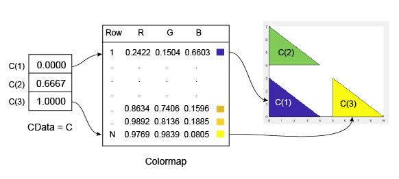
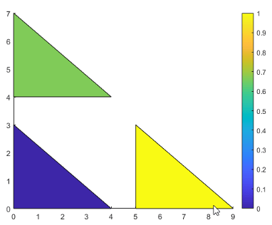
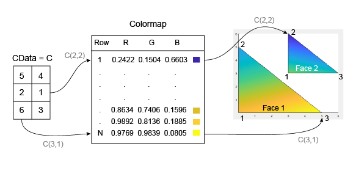
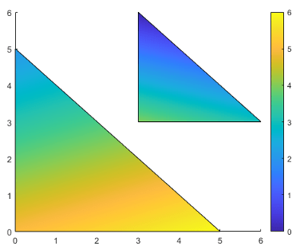
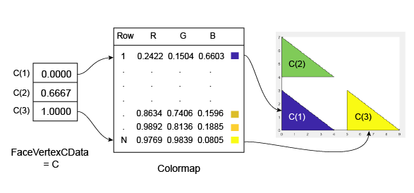
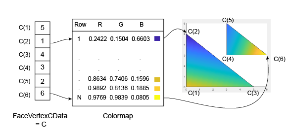

How Patch Data Relates to a Colormap
When you create graphics that use Patch objects,
you can control the overall color scheme by calling the colormap function. You can also control
the relationship between the colormap and your patch by:
Assigning specific colors to the faces
Assigning specific colors to the vertices surrounding each face
The way you control these relationships depends on how you specify your patches: as x-, y-, and z-coordinates, or as face-vertex data.
Relationship of the Colormap to x-, y-, and z-Coordinate Arrays
If you create a Patch object using x-, y-,
and z-coordinate arrays, the CData property
of the Patch object contains an indexing array C.
This array controls the relationship between the colormap and your
patch. To assign colors to the faces, specify C as
an array with these characteristics:
Cis an n-by-1 array, where n is the number of faces.The value at
C(i)controls the color for facei.
Here is an example of C and its
relationship to the colormap and three faces. The value of C(i) controls
the color for the face defined by vertices (X(i,:), Y(i,:)).

The smallest value in C is 0. It maps to
the first row in the colormap. The largest value
in C is 1,
and it maps to the last row in the colormap. Intermediate values
of C map linearly to the
intermediate rows in the colormap. In this
case, C(2) maps to the color
located about two-thirds from the beginning of the colormap. This
code creates the Patch object
described in the preceding illustration.
X = [0 0 5; 0 0 5; 4 4 9]; Y = [0 4 0; 3 7 3; 0 4 0]; C = [0; .6667; 1]; p = patch(X,Y,C); colorbar

To assign colors to the vertices, specify C as
an array with these characteristics:
Cis an m-by-n array, where m is the number of vertices per face, and n is the number of faces.The value at
C(i,j)controls the color at vertexiof facej.
Here is an example of C and its
relationship to the colormap and six vertices. The value of C(i,j) controls
the color for the vertex at (X(i,j), Y(i,j)).

As with patch faces, MATLAB® scales the values in C to
the number of rows in the colormap. In this case, the smallest value
is C(2,2)=1, and it maps to the first row in the
colormap. The largest value is C(3,1)=6, and it
maps to the last row in the colormap.
This code creates the Patch object described in the
preceding illustration. The FaceColor property
is set to 'interp' to make the vertex colors
blend across each face.
clf X = [0 3; 0 3; 5 6]; Y = [0 3; 5 6; 0 3]; C = [5 4; 2 0; 6 3]; p = patch(X,Y,C,'FaceColor','interp'); colorbar

Relationship of the Colormap to Face-Vertex Data
If you create patches using face-vertex data, the FaceVertexCData property
of the Patch object contains an indexing array C.
This array controls the relationship between the colormap and your
patch.
To assign colors to the faces, specify C as
an array with these characteristics:
Cis an n-by-1 array, where n is the number of faces.The value at
C(i)controls the color for facei.
Here is an example of C and its
relationship to the colormap and three faces.

The smallest value in C is 0,
and it maps to the first row in the colormap. The largest value in C is 1,
and it maps to the last value in the colormap. Intermediate values
of C map linearly to the intermediate rows in the
colormap. In this case, C(2) maps to the color
located about two-thirds from the bottom of the colormap.
This code creates the Patch object described in the
preceding illustration. The FaceColor property
is set to 'flat' to display the colormap colors
instead of the default color, which is black.
clf vertices = [0 0; 0 3; 4 0; 0 4; 0 7; 4 4; 5 0; 5 3; 9 0]; faces = [1 2 3; 4 5 6; 7 8 9]; C = [0; 0.6667; 1]; p = patch('Faces',faces,'Vertices',vertices,'FaceVertexCData',C); p.FaceColor = 'flat'; colorbar
To assign colors to the vertices, specify the FaceVertexCData property
of the Patch object as array C with
these characteristics:
Cis an n-by-1 array, where n is the number of vertices.The value at
C(i)controls the color at vertexi.
Here is an example of C and its relationship
to the colormap and six vertices.

As with patch faces, MATLAB scales the values in C to
the number of rows in the colormap. In this case, the smallest value
is C(2)=1, and it maps to the first row in the
colormap. The largest value is C(6)=6, and it maps
to the last row in the colormap.
This code creates the Patch object described in the
preceding illustration. The FaceColor property
is set to 'interp' to make the vertex colors
blend across each face.
clf vertices = [0 0; 0 5; 5 0; 3 3; 3 6; 6 3]; faces = [1 2 3; 4 5 6]; C = [5; 1; 4; 3; 2; 6]; p = patch('Faces',faces,'Vertices',vertices,'FaceVertexCData',C); p.FaceColor = 'interp'; colorbar